Module 05 — Exploiter Teams, SharePoint et OneDrive¶
La transcription du support Drive et l’aide pédagogique sont séparées pour rendre leur provenance explicite.
SOURCE DRIVE · TRANSCRIPTION DU SUPPORT
Le contenu des documents du dossier TSSR est transcrit ci-dessous, page par page. Les textes et tableaux sont intégrés à la page Web. Aucun fichier PDF, aucune diapositive entière ni aucune reproduction de page n’est affiché. Seuls des croquis ou visuels isolés et vérifiés peuvent accompagner la transcription. Les versions et les consignes restent celles des supports de formation. Les compléments IA sont conservés dans leur onglet distinct.
Support · Module 05 - Support de cours · 15 pages transcrites
Page 1
Outils collaboratifs
Exploiter Teams, SharePoint et OneDrive dans un contexte
collaboratif
Exploiter Teams, SharePoint et OneDrive dans un contexte collaboratif
Objectifs
- Comprendre les enjeux d’une plateforme collaborative
- Utiliser une plateforme Cloud pour exploiter vos données
- Utiliser des outils de synchronisation des données
Page 2
Exploiter Teams, SharePoint et OneDrive dans un contexte collaboratif
SharePoint
Qu’est-ce que SharePoint ?
- Suite de logiciels qui permet de créer des sites web internes
- SharePoint Online
- Service hébergé dans le cloud par Microsoft par un abonnement à Microsoft 365 ou SharePoint Online autonome
- SharePoint Server
- Service installé en local (On-premises)
- SharePoint Designer
- Service gratuit permettant de gérer des flux de travail (basée sur Business Connectivity Services)
- Synchronisation OneDrive Entreprise
- Service de synchronisation de documents à des fins d'utilisation Hors connexion
Page 3
À quoi sert SharePoint ?
- Partager et collaborer
- Partage de documents et versioning
- Informer et prendre part
- Teams, blog et site d'actualités
- Transformer des flux métier
- Gérer des flux métier avec des ERP ou des logiciels tiers
- Exploiter et gérer des connaissances collectives
- Créer un Wiki d'entreprise
- Protéger et gérer vos données
- Anti-programme malveillant
Exploiter Teams, SharePoint et OneDrive dans un contexte collaboratif
OneDrive
Page 4
Qu’est-ce que OneDrive ?
- Espace de stockage dans le cloud azure (1 To par défaut)
- Service SharePoint Online
- Stocke des fichiers depuis différentes plateformes :
- PC
- Tablette
- Mobile
- Vous pouvez stocker, consulter et partager des fichiers à partir de n’importe quel ordinateur connecté à internet
- Vous pouvez travailler avec des utilisateurs externes ou internes
- Il est possible de sécuriser vos fichiers avec des fonctionnalités avancées de chiffrement
Comment accéder à son OneDrive ?
- Via le portail Microsoft 365
- Via l’application

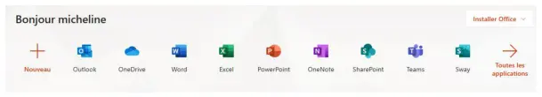
Page 5
Les icônes OneDrive
Les trois tirets bleus signifient que c'est un nouveau fichier La croix rouge sur un fichier ou un dossier signifie qu'il ne peut pas être synchronisé Le nuage grisé signifie que vous n'êtes pas connecté à votre compte Le symbole de pause signifie que votre OneDrive est en pause de synchronisation Les flèches circulaires signifient que la synchronisation est en cours
Le nuage avec une personne signifie que le fichier ou le dossier a été partagé Le nuage signifie que le fichier ou le dossier n'est disponible qu'en ligne Le cercle vert avec la coche verte signifie que le fichier ouvert en ligne va être téléchargé localement Le cercle vert avec la coche blanche signifie que le fichier sera toujours téléchargé localement Le cadenas signifie que des paramètres vous empêchent de synchroniser ce dossier ou ce fichier
Page 6
Partager dans OneDrive
- Partage :
- Par un lien
- Par un mail
La corbeille dans OneDrive
- Restauration d’un fichier

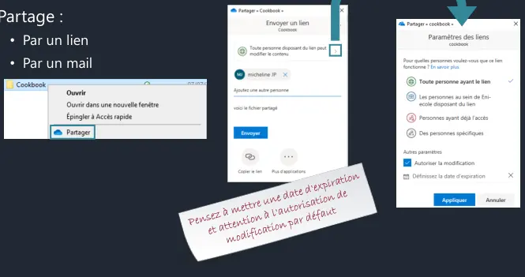

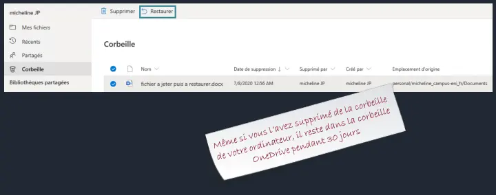
Page 7
Restaurer son espace OneDrive
Le versioning dans OneDrive
- L'historique des versions vous permet de suivre toutes les modifications sur votre fichier
- Il vous permet aussi de revenir à une version précédente sans perdre la dernière version enregistrée

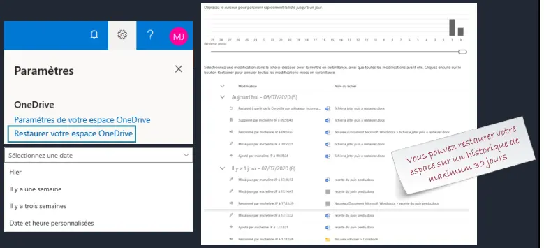

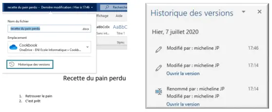
Page 8
La co-édition (co-authoring) dans OneDrive
- La co-édition permet d'avoir une notification lorsqu'un autre utilisateur ouvre le même fichier que vous et de travailler avec lui en même temps
- OneDrive, OneDrive Entreprise, SharePoint Online et SharePoint Server sont des zones de stockage partagées qui permettent la co-édition
- Prise en charge du co-authoring sur ces extensions :
- .docx (Word), .pptx (PowerPoint) et .xlsx (Excel)
Retrouver le curseur du co-auteur avec sa couleur associée
Les paramètres du client OneDrive
- Vous pouvez choisir les dossiers que vous voulez synchroniser
- Gérer les taux de chargement lors de la synchronisation

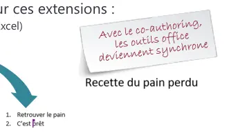

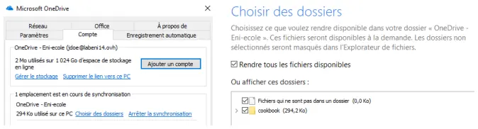
Page 9
Exploiter Teams, SharePoint et OneDrive dans un contexte collaboratif
Teams
Qu’est-ce que Teams ?
- Un espace de travail centralisé
- Office et d'autres applications dans Teams en co-édition
- 1 To de stockage
- Conférence audio et vidéo
- Partage d'écran
- Planification de réunion
- Fil de conversation
- Enregistrement de réunion
- 250 équipes maximum qu’un utilisateur peut créer
- Multiplateformes (ordinateur, tablette, smartphone)
- Un calendrier
Page 10
L’interface de Teams
- Teams est composé de trois volets
| Volet Gauche | Volet Central | Volet Principal |
Structure d’une équipe
| Equipe | Un ou des propriétaires |
Un ou des membres
| Canaux | Général | Groupe 1 | Groupe 2 | Groupe 3 | Groupe 4 |
| publications | publications | publications | publications | publications | |
| fichiers | fichiers | fichiers | fichiers | fichiers |
Onglets
| notes | notes | notes | notes | notes |
| applications | applications | applications | applications | applications |

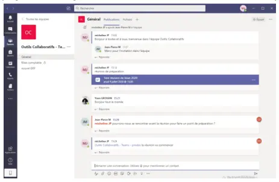
Page 11
Qu’est-ce qu’une équipe dans Teams ?
- Une équipe est un ensemble d’utilisateurs, de contenus et d’outils
- 10000 membres par équipe maximum
- Un utilisateur peut être membre de 1000 équipes maximum
Créer une équipe dans Teams
- Lorsque vous créez une équipe Teams, il sera aussi créé :
- Un nouveau groupe Microsoft 365
- Un site SharePoint Online
- Une boîte aux lettres partagée (cachée par défaut dans Outlook)
- Un bloc-notes OneNote
Page 12
Les paramètres d’une équipe Teams
- Vous pouvez gérer :
- L’image d’une équipe
- Les autorisations des membres
- Les autorisations invité
- L’utilisation des mentions @mentions
- L’utilisation de code d’invitation
- L’utilisation des outils amusants (emojis, GIF, autocollants…)
- La création de balises (seul le propriétaire peut en créer par défaut)
Qu’est-ce qu’un canal ?
- Compartimente votre équipe par sujet
- Un canal peut être privé ou public
- Chaque équipe à un canal Général par défaut
- Vous pouvez gérer les notifications par canal
- Un canal supprimé peut être restauré avec un maximum de 30 jours
- 200 canaux au maximum par équipe

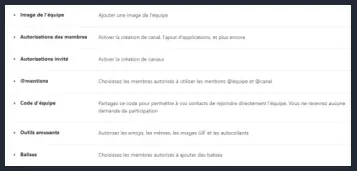

Page 13
Créer un canal dans Teams
- Un canal est un ensemble de conversations, de contenus et d'outils
Vous pouvez ajouter des onglets
| Vous pouvez envoyer un mail dans un canal | vers des applications ou des |
fichiers pour un accès rapide
Un connecteur permet d'associer une application à votre canal
Vous pouvez ajouter des contenus à votre canal
Avoir une conversation au fil de l'eau de votre projet
Qu’est-ce qu’un onglet ?
- Un canal est scindé en plusieurs onglets par défaut
- Publications
- Fichiers
- Notes
- Vous pouvez créer d’autres onglets et y publier des applications

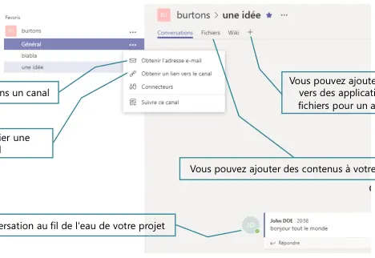
Page 14
La gestion des fichiers Teams
- Les fichiers sont accessibles par défaut par tous les membres de l’équipe depuis l’onglet Fichiers
- Ils sont stockés dans une bibliothèque SharePoint créée pour chaque canal
- Ils ont les mêmes fonctionnalités que dans OneDrive, c’est-à-dire le versioning et le co-authoring
- Il est possible de transformer un fichier en onglet
Les messages
- Un message peut être privé ou public
- Un message public est visible par tous les membres de l’équipe ou du canal
- Un message privé ou une conversation ne sont lisibles que par la personne sélectionnée
- Un message peut être enregistré
- Il est possible de faire une conférence audio ou vidéo à une ou plusieurs personnes et de l’enregistrer dans l’application Stream
Page 15
Les réunions d’équipe
- Une réunion peut être planifiée ou créée sur l’instant
- Maximum 250 utilisateurs
- Peut être créée depuis Outlook
- Lors d’une réunion, il est possible de partager :
- Une présentation PowerPoint
- Son écran
- Un tableau blanc
- Il existe une salle d’attente afin de faire patienter des utilisateurs avant le début d’une réunion
- Il existe 3 rôles :
- L’organisateur qui a créé la réunion et qui dispose de tous les droits
- Le présentateur qui peut gérer la réunion et les utilisateurs, mais pas les rôles
- Le participant
Référence du document : 1btkcyqXJeJ7orW9xW4NKJQZBqilyiBk6 · SHA-256 3d399e41849d4610…
Énoncé · M5 - Enoncé du TP - OneDrive · 1 pages transcrites
Page 1
Utilisation de OneDrive
Énoncé
TP du Module 05 – Exploiter Teams, SharePoint et OneDrive dans un contexte collaboratif Avant de démarrer ce TP, il convient d’avoir suivi les vidéos des modules 1 à 5 et d’avoir réalisé les TP proposés.
Durée estimée 60 minutes
Objectifs Utilisation de OneDrive.
Prérequis Avoir installé Office 365.
| • | Ouvrez un navigateur en navigation privée et allez à la page : |
o https://portal.office.com. o Connectez-vous avec votre compte de tenant puis ouvrez OneDrive Online. o Créez un fichier Word nommé « recette du pain perdu » :
| ▪ | Titre : recette du pain perdu |
| ▪ | Contenu : retrouver le pain |
| • | Partagez le fichier « recette du pain perdu » avec une autre adresse mail. |
o Indiquez une date d’expiration au lendemain o Avec le mot de passe : Pa$$w0rd (c’est un zéro). o Envoyez-le avec le message : « voici la recette que tu m’avais demandée ». o Ouvrez le fichier avec votre application de bureau Word et modifiez-le en ajoutant la ligne : « Attention, je ne parle pas de l’arbre. »
| • | Fermez le fichier puis affichez l’activité sur votre fichier. |
| • | Rouvrez-le et restaurez à la version précédente. |
| • | Vérifiez. |
| • | Ouvrez OneDrive avec votre explorateur et modifiez l’emplacement de synchronisation |
des fichiers vers « C:\usersvotrenom\Documents\OneDrive ».
| • | Depuis votre explorateur, partagez la recette avec Jean-Pierre en lecture. |
Référence du document : 1o0ntHLs0ZAkg2EFWnh_bTqaSCOrgmDj7 · SHA-256 29c95f64a89a1a33…
Correction · M5 - Solution du TP - OneDrive · 7 pages transcrites
Correction originale : à consulter après avoir tenté l’exercice.
Page 1
Utilisation de OneDrive
Solution
TP du Module 05 – Exploiter Teams, SharePoint et OneDrive dans un contexte collaboratif Avant de démarrer ce TP, il convient d’avoir suivi les vidéos des modules 1 à 5 et d’avoir réalisé les TP proposés.
Durée estimée 60 minutes
En fonction des informations qui vous ont été fournies, connectez-vous à la machine de l’ENI.
| • | Ouvrez | un | navigateur | en | navigation | privée | et | allez | à | la |
page https://portal.office.com. Connectez-vous avec votre compte de tenant puis ouvrez OneDrive Online. Créez un fichier Word nommé « recette du pain perdu » : o Titre centré : recette du pain perdu o Contenu :
| ▪ | 1. retrouver le pain |
| ▪ | 2. C’est prêt |
Utilisez une page en navigation privée pour ne pas interférer avec une autre connexion Office 365 puis cliquez sur OneDrive.
Page 2
Cliquez su Nouveau Document Word Créez le contenu du fichier.
Sélectionnez le fichier puis renommez-le.

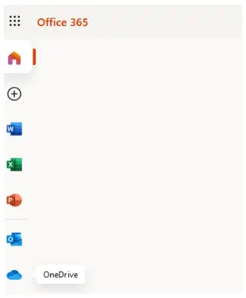

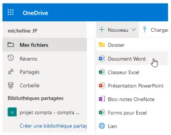

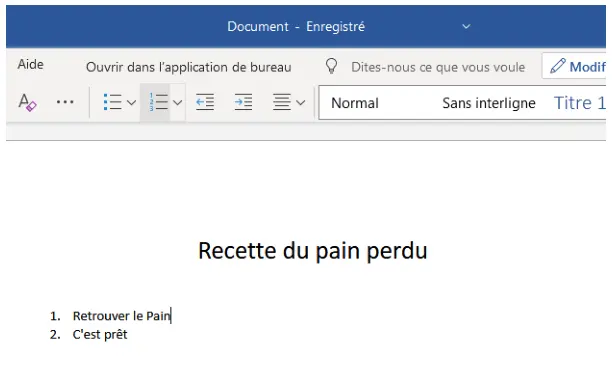
Page 3
| • | Partagez le fichier « recette du pain perdu » avec votre compte campus-eni.fr. Indiquez |
une date d’expiration au lendemain et comme mot de passe : Pa$$w0rd (c’est un zéro). Envoyez-le avec le message : « voici la recette que tu m’avais demandée ». Sélectionnez le fichier puis cliquez sur Partager. Indiquez votre adresse mail campus puis ajoutez les messages. Ensuite, cliquez sur « Toute personne disposant … », indiquez une date d’expiration et le mot de passe : Pa$$w0rd (c’est un zéro) puis envoyez-le.

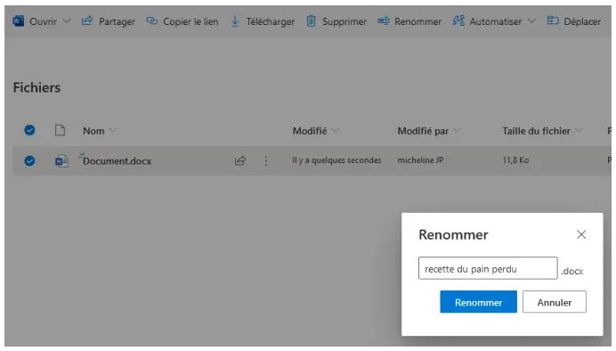

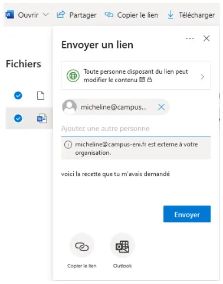
Page 4
| • | Ouvrez le fichier avec votre application de bureau Word et modifiez-le en ajoutant la |
ligne : « Attention, je ne parle pas de l’arbre. » Fermez le fichier puis affichez l’activité sur votre fichier. Rouvrez-le et restaurez à la version précédente. Vérifiez. Ouvrez le fichier et sélectionnez « Ouvrir dans l’application ».
Ajoutez la phrase demandée. Sélectionnez le message puis cliquez sur Afficher les détails.

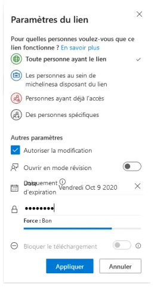

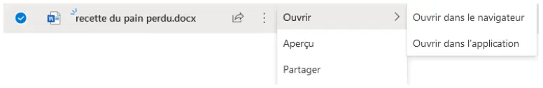

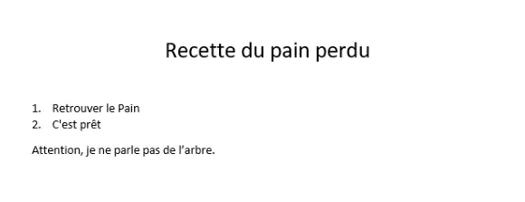
Page 5
Sélectionnez le fichier puis cliquez sur les trois points et Historique des versions. Cliquez sur Restaurer sur la version désirée puis vérifiez.
| • | Ouvrez OneDrive avec votre explorateur et modifiez l’emplacement de synchronisation |
des fichiers vers « C:\usersvotrenom\Documents\OneDrive ». Allez dans l’explorateur Windows et cliquez sur le nuage bleu puis renseignez votre adresse campus-eni.fr.


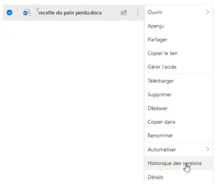

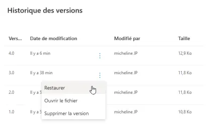
Page 6
Créez un répertoire dans Documents puis changez l’emplacement.
C:\Users\votrenom\Documents\Onedrive - micheline
| • | Depuis votre explorateur, partagez la recette avec Jean-Pierre en lecture. |
Allez dans l’Explorateur Windows et cliquez sur le nuage bleu puis faites un clic droit sur le fichier recette et enfin partagez-le.

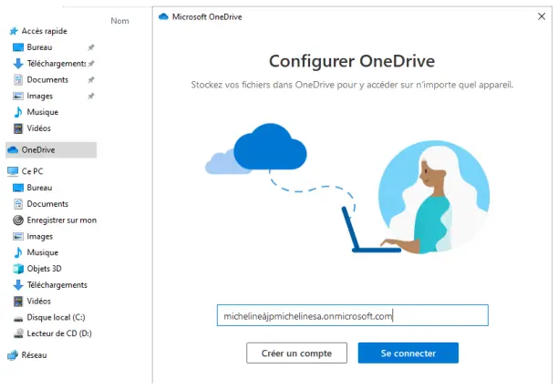

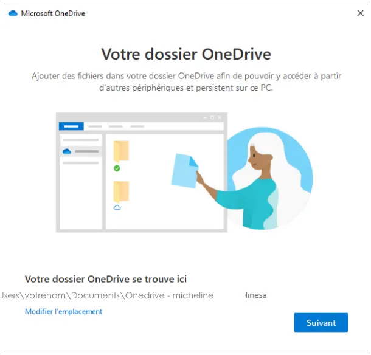
Page 7
Allez sur la gestion des liens, puis décochez « Autoriser la modification ». D’autres solutions sont possibles pour ce TP. Il n’existe pas une seule façon de faire.

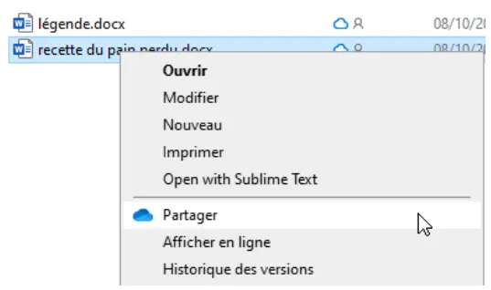

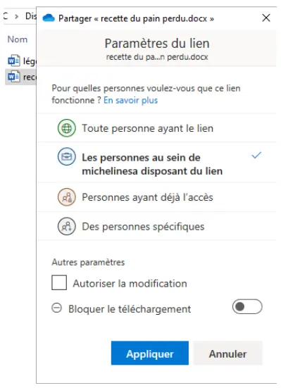
Référence du document : 1VyzxkiTFZ_7CSqJMtHamo5EC-2x4129U · SHA-256 4dde7d467424ae97…
Complément IA / externe au cours — fiche pédagogique du portail
Cette fiche contient une reformulation et des aides d’apprentissage rédigées par IA. Elle est distincte de la transcription des documents du Drive et ne la remplace pas. Les schémas de synthèse de cette fiche sont des illustrations IA / externes au cours, sauf les captures explicitement attribuées à un document source.
Séquence : Microsoft 365 — Outils collaboratifs
Rôle dans le parcours : relier le stockage, les sites et l’espace d’équipe, puis réaliser le TP OneDrive.
Objectifs¶
- Comprendre les enjeux d’une plateforme collaborative.
- Utiliser une plateforme Cloud pour exploiter vos données.
- Utiliser des outils de synchronisation des données.
1. SharePoint¶
SharePoint est une suite de logiciels qui permet de créer des sites web internes.
| Composant | Description du support |
|---|---|
| SharePoint Online | Service hébergé dans le cloud par Microsoft, par un abonnement Microsoft 365 ou SharePoint Online autonome. |
| SharePoint Server | Service installé en local (on-premises). |
| SharePoint Designer | Service gratuit de flux de travail, basé sur Business Connectivity Services. |
| Synchronisation OneDrive Entreprise | Synchronise des documents pour une utilisation hors connexion. |
À quoi sert SharePoint :
- Partager et collaborer : documents et versioning.
- Informer et prendre part : Teams, blog et site d’actualités.
- Transformer des flux métier : ERP ou logiciels tiers.
- Exploiter les connaissances collectives : wiki d’entreprise.
- Protéger et gérer les données : anti-programme malveillant.
2. OneDrive¶
| Point | Texte du support |
|---|---|
| Nature | Espace de stockage dans le cloud Azure, 1 To par défaut. Service SharePoint Online. |
| Postes | PC, tablette, mobile. |
| Accès | Stocker, consulter et partager depuis n’importe quel ordinateur connecté à Internet. |
| Personnes | Utilisateurs externes ou internes. |
| Protection | Fonctionnalités avancées de chiffrement. |
| Entrées | Portail Microsoft 365, ou application. |
Icônes¶
| Signe | Signification |
|---|---|
| Trois tirets bleus | Nouveau fichier. |
| Croix rouge | Le fichier ou le dossier ne peut pas être synchronisé. |
| Nuage grisé | Vous n’êtes pas connecté au compte. |
| Pause | OneDrive est en pause de synchronisation. |
| Flèches circulaires | Synchronisation en cours. |
| Nuage avec une personne | Fichier ou dossier partagé. |
| Nuage | Disponible uniquement en ligne. |
| Cercle vert, coche verte | Le fichier ouvert en ligne va être téléchargé localement. |
| Cercle vert, coche blanche | Le fichier sera toujours téléchargé localement. |
| Cadenas | Un paramètre empêche de synchroniser ce dossier ou ce fichier. |
Partage par un lien ou par un e-mail. La corbeille permet de restaurer un fichier. L’historique des versions suit les modifications et permet de revenir à une version précédente sans perdre la dernière version enregistrée.
La co-édition prévient quand un autre utilisateur ouvre le même fichier et permet de travailler en même temps. OneDrive, OneDrive Entreprise, SharePoint Online et SharePoint Server sont des zones partagées qui la prennent en charge, pour .docx, .pptx et .xlsx. Le curseur du co-auteur se retrouve avec sa couleur.
Le client OneDrive permet de choisir les dossiers synchronisés et de gérer les taux de chargement.
3. Teams¶
Teams est un espace de travail centralisé : Office et d’autres applications en co-édition, 1 To de stockage, conférence audio et vidéo, partage d’écran, planification de réunion, fil de conversation, enregistrement de réunion, 250 équipes maximum qu’un utilisateur peut créer, clients multiplateformes, un calendrier.
L’interface a trois volets : gauche, central et principal.
| Niveau | Contenu décrit |
|---|---|
| Équipe | Un ou des propriétaires, un ou des membres. |
| Canaux | Général, puis Groupe 1 à Groupe 4 dans le schéma. |
| Dans chaque canal | Publications, fichiers, notes, applications. |
Une équipe réunit des utilisateurs, des contenus et des outils. Maximum 10 000 membres par équipe. Un utilisateur peut être membre de 1 000 équipes au maximum.
Créer une équipe crée aussi un groupe Microsoft 365, un site SharePoint Online, une boîte aux lettres partagée (cachée par défaut dans Outlook) et un bloc-notes OneNote.
Paramètres gérables : image, autorisations des membres, autorisations invité, @mentions, code d’invitation, outils amusants (emojis, GIF, autocollants), balises (seul le propriétaire peut en créer par défaut).
| Règle d’un canal | Valeur du support |
|---|---|
| Rôle | Compartimente l’équipe par sujet. |
| Visibilité | Privé ou public. |
| Canal par défaut | Général. |
| Notifications | Gérables par canal. |
| Suppression | Restauration possible pendant 30 jours au maximum. |
| Plafond | 200 canaux par équipe. |
Un canal réunit conversations, contenus et outils. On peut ajouter des onglets, envoyer un e-mail dans un canal, associer une application par un connecteur, ajouter des contenus et tenir une conversation au fil du projet.
Onglets par défaut : Publications, Fichiers, Notes. D’autres onglets peuvent publier des applications.
Les fichiers de l’onglet Fichiers sont accessibles par défaut à tous les membres. Ils sont dans une bibliothèque SharePoint créée pour chaque canal, avec le versioning et le co-authoring de OneDrive. Un fichier peut devenir un onglet.
Un message public est visible par les membres de l’équipe ou du canal. Un message privé ou une conversation ne sont lisibles que par la personne sélectionnée. Un message peut être enregistré. Une conférence audio ou vidéo, à une ou plusieurs personnes, peut être enregistrée dans Stream.
Une réunion est planifiée ou immédiate, 250 utilisateurs maximum, et peut être créée depuis Outlook. On peut y partager une présentation PowerPoint, son écran ou un tableau blanc. Une salle d’attente fait patienter avant le début.
| Rôle | Droits décrits |
|---|---|
| Organisateur | A créé la réunion et dispose de tous les droits. |
| Présentateur | Gère la réunion et les utilisateurs, mais pas les rôles. |
| Participant | Rôle distinct des deux précédents. |
Illustration IA / externe au cours — ce qu’une équipe Teams crée en plus d’elle-même.
4. TP — Utilisation de OneDrive¶
Durée : 60 minutes. Vidéos des modules 1 à 5 et TP précédents.
Objectif : utilisation de OneDrive. Prérequis : Office 365 installé.
- Ouvrir un navigateur en navigation privée et aller sur
https://portal.office.com. - Se connecter avec le compte de tenant, puis ouvrir OneDrive Online.
- Créer un fichier Word « recette du pain perdu ». Titre : recette du pain perdu. Contenu : retrouver le pain.
- Le partager avec une autre adresse. Expiration au lendemain. Mot de passe :
Pa$$w0rd(c’est un zéro). Message : « voici la recette que tu m’avais demandée ». - Ouvrir le fichier dans Word de bureau et ajouter : « Attention, je ne parle pas de l’arbre. »
- Fermer le fichier, afficher l’activité, le rouvrir, restaurer la version précédente, vérifier.
- Ouvrir OneDrive dans l’explorateur et modifier l’emplacement de synchronisation vers
C:\usersvotrenom\Documents\OneDrive. - Depuis l’explorateur, partager la recette avec Jean-Pierre en lecture.
Correction¶
La correction demande de se connecter à la machine du centre de formation. Le contenu du fichier y est précisé en deux lignes : « 1. retrouver le pain » et « 2. C’est prêt ». Le titre est centré. La navigation privée évite d’interférer avec une autre connexion Office 365.
- Nouveau, Document Word. Créer le contenu, sélectionner le fichier, le renommer. La capture écrit « Cliquez su Nouveau » : le support omet le r de « sur ».
- Partager avec le compte
campus-eni.fr. La correction clique sur Partager, indique l’adresse, le message, puis « Toute personne disposant … », la date d’expiration et le mot de passePa$$w0rd. - Ouvrir dans l’application, ajouter la phrase, sélectionner le message, Afficher les détails.
- Trois points, Historique des versions, Restaurer, puis vérifier.
- Dans l’explorateur, cliquer le nuage bleu, renseigner l’adresse
campus-eni.fr, créer un répertoire dans Documents et changer l’emplacement. La correction montreC:\Users\votrenom\Documents\Onedrive - micheline. - Clic droit sur la recette, Partager. Dans la gestion des liens, décocher « Autoriser la modification ».
La correction conclut qu’il n’existe pas une seule façon de faire.
Résumé¶
SharePoint porte les sites et les bibliothèques. OneDrive est l’espace personnel d’1 To, avec des icônes d’état précises et la co-édition des fichiers Office. Teams ajoute les équipes, les canaux et les réunions, mais range les fichiers dans SharePoint. Le TP enchaîne création, partage protégé par mot de passe, version, déplacement du dossier synchronisé et partage en lecture seule.
Mini-quiz¶
- Quelle différence le support fait-il entre SharePoint Online et SharePoint Server ?
- Que signifie le cadenas OneDrive ?
- Quels trois objets une nouvelle équipe Teams crée-t-elle en plus du groupe et du bloc-notes ?
- Où sont stockés les fichiers d’un canal ?
- Combien de temps un canal supprimé peut-il être restauré ?
Réponses du mini-quiz
- Online est hébergé dans le cloud. Server est installé en local.
- Un paramètre empêche de synchroniser ce dossier ou ce fichier.
- Un groupe Microsoft 365, un site SharePoint Online et une boîte aux lettres partagée cachée par défaut dans Outlook. Le bloc-notes OneNote est le quatrième objet cité.
- Dans une bibliothèque SharePoint créée pour chaque canal.
- 30 jours au maximum.
M05 — Exploiter Teams, SharePoint et OneDrive
20 questions
Teste tes connaissances sur ce module.